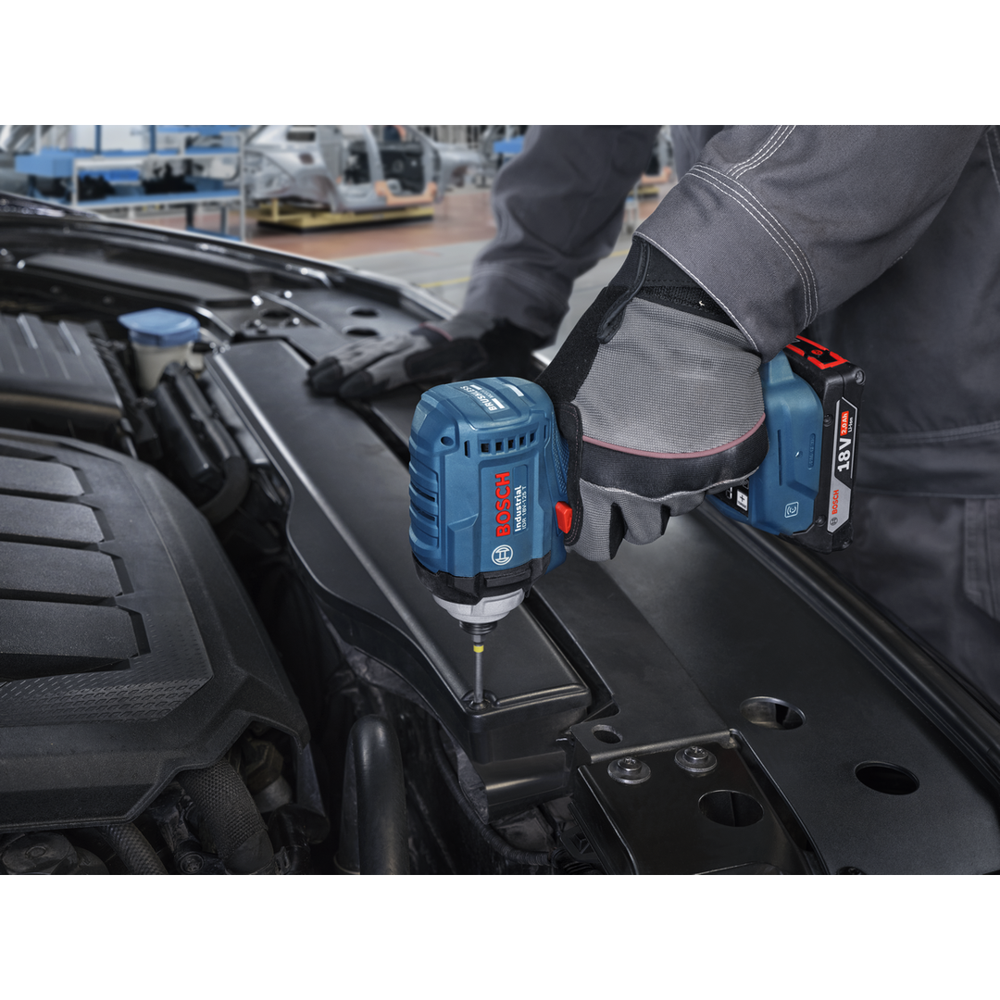
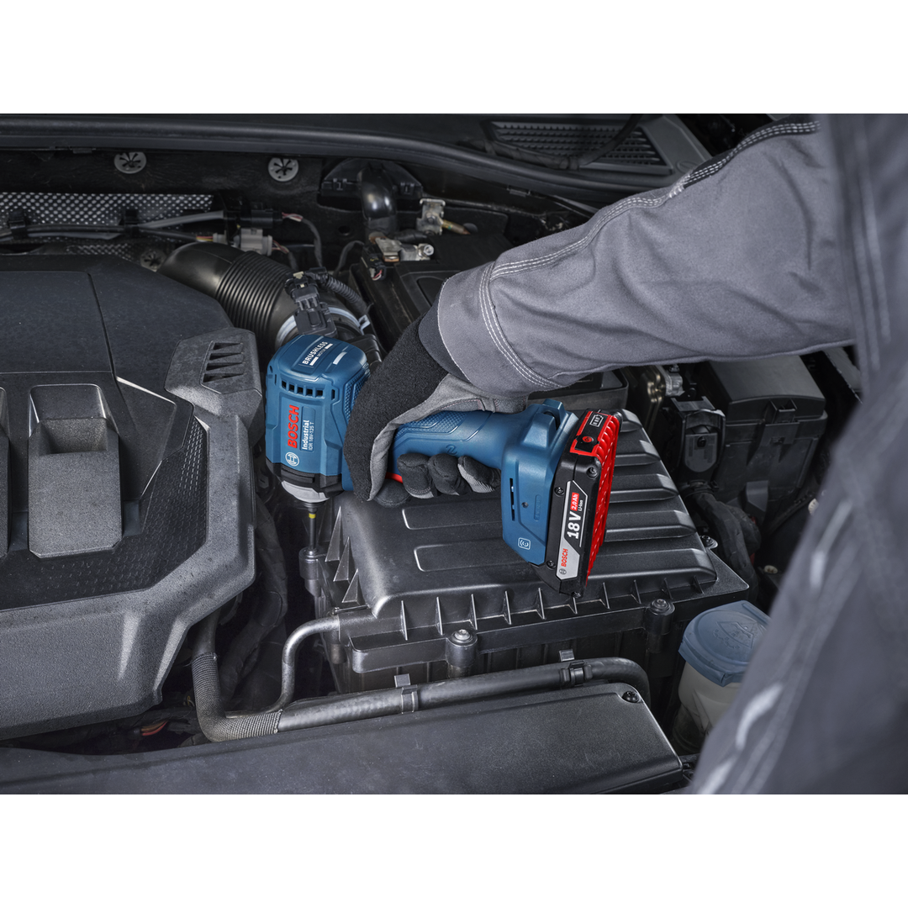
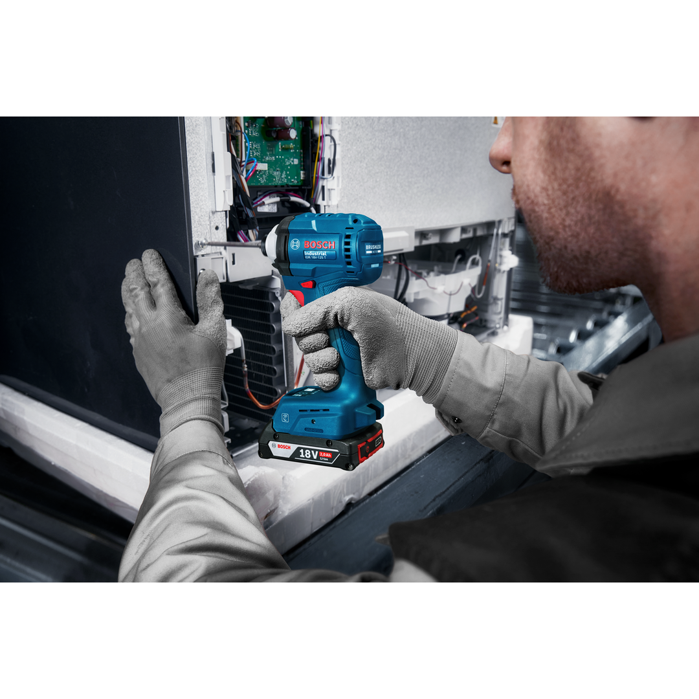
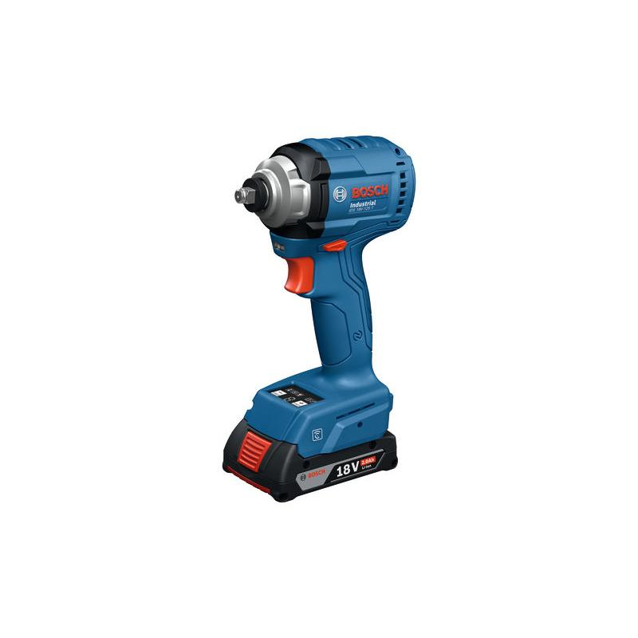
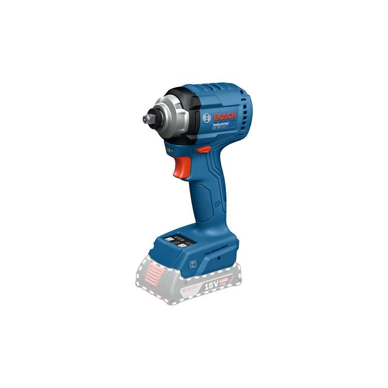

06019P8000





| Torque, from (hard) |
5 Nm |
| Torque, to (hard) |
70 Nm |
| Torque (hard) |
5 – 70 Nm |
| Speed, from |
0 rpm |
| Speed, up to |
3,100 rpm |
| Speed |
0 – 3,100 rpm |
| Direction of rotation |
R/L |
| Weight |
1.100 kg |
| Bit holder |
3/8'' Square |
| Battery |
GBA 18V |
| Drive type |
Battery |
| Design |
Pistol |
| Adjustable speed | ✓ |
| Brushless motor | ✓ |
| Connector type |
Impact mechanism |
| Push start | ✓ |
Industrial impact wrench with consistent, pre-selectable output torque: 1. High-performance tightening thanks to stable and consistent output torque 2. Long life cycle due to durable gearbox and robust trigger 3. Increases assembly-line efficiency and quality thanks to auto-shut-off function 4. Efficient tool management thanks to usage data with HMI lock and NFC connectivity